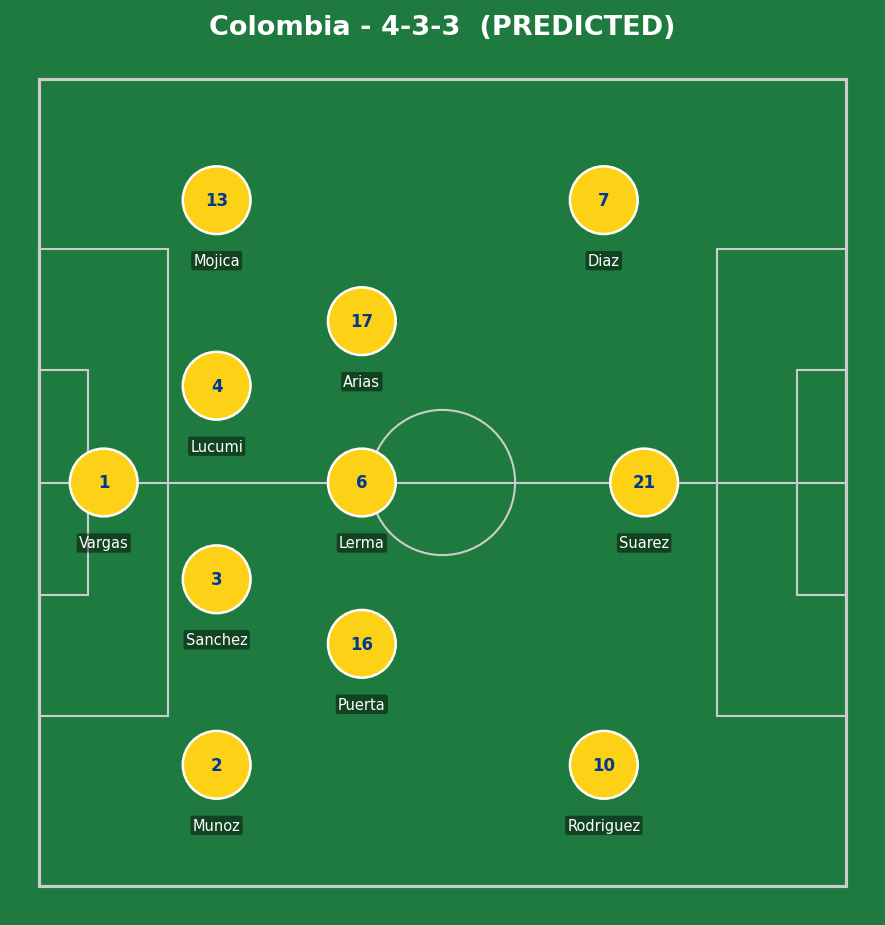
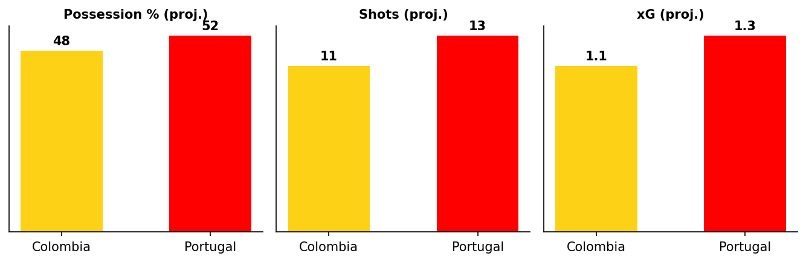

Colombia vs Portugal
The stakes are simple: a Portugal win takes them top of Group K; anything else (a draw or Colombia win) sends Colombia through in first place. Both sides have already secured qualification regardless, but the difference between finishing first and second could shape a meaningfully easier or harder Round of 32 draw.
Colombia have been the more consistent side through the group stage - two wins from two, conceding just once, with Daniel Munoz scoring twice. Portugal's campaign has been more uneven: a goalless draw with DR Congo followed by an emphatic 5-0 response against Uzbekistan, with Ronaldo's brace there making him the first player ever to score at six different World Cups.


Colombia (4-2-3-1): Machado; Vargas, Lucumi, Sanchez, S. Arias; Lerma, Puerta; J. Arias, Cordoba, Diaz; Rodriguez (c). Portugal (4-2-3-1): Diogo Costa; Cancelo, Dias, Veiga, N. Mendes; Neto, R. Neves; Felix, B. Fernandes, Vitinha; Ronaldo (c).
Two notable selection calls: Lorenzo drops both Daniel Munoz and Luis Suarez to the bench, bringing in Cordoba and S. Arias - a slightly more conservative Colombia XI than expected, with Rodriguez pushed into a deeper false-9 role rather than a true striker starting alongside him. Martinez goes with Felix and R. Neves ahead of Dalot and Bernardo Silva - Neto and Neves forming the double pivot, with Bruno Fernandes given license to roam centrally behind Ronaldo.
The central duel to watch is Luis Diaz against Portugal's right-back Diogo Dalot. Diaz has been Colombia's most dynamic attacking threat all tournament, and Dalot's attack-minded instincts can leave him exposed defensively when teams target that channel directly. If Colombia consistently get Diaz in behind Dalot, it stretches Portugal's shape and opens central space for James Rodriguez and Jhon Arias to exploit.
Portugal's own counter-threat through Rafael Leao on the opposite flank means Colombia's attacking full-back Daniel Munoz will need to balance his attacking instincts with real defensive discipline - get caught too far upfield and Portugal have a direct route in behind via Leao's pace.
Key tactical question: can Portugal's midfield trio of Neves, Vitinha, and Bruno Fernandes control the tempo against a Colombia engine room (Puerta, Lerma, Arias) that's shown real industry and discipline through two clean defensive performances so far.
- Cristiano Ronaldo (Portugal) - fresh off his historic six-World-Cups goal and a brace against Uzbekistan, all eyes are back on him against a far tougher opponent than the Uzbeks.
- Luis Diaz (Colombia) - Colombia's most dynamic threat all tournament, now operating on the left rather than a pure central role, still the central figure in any route through Portugal's right side.
- James Rodriguez (Colombia, captain) - pushed into a deeper, more central false-9 role rather than a true striker - his ability to drop into pockets and dictate play becomes even more important with no orthodox striker alongside him.
- Bruno Fernandes (Portugal) - given a freer, more central role behind Ronaldo rather than Vitinha or Felix - the player most likely to dictate Portugal's tempo and create chances centrally.
Portugal have real attacking depth on the bench regardless of who starts - Pedro Neto's place looks in jeopardy after Leao's impressive cameo last time out, meaning whichever of the two doesn't start could be a genuine second-half difference-maker. Bernardo Silva returning to the side after rotation also adds another senior option.
Colombia's bench options (Cucho Hernandez among them) have already shown impact this tournament, having combined for a goal in the win over Uzbekistan earlier in the group stage.

Modelled from current tournament form on both sides - a genuinely close projection reflecting two well-matched, in-form teams, not a guarantee.
Portugal's superior individual quality in the final third, especially with Ronaldo in this kind of form, gives them the edge to find a winner - but Colombia's defensive solidity (conceding just once in two games) and genuine attacking threat through Diaz make a draw a very real possibility, which would be enough to send Colombia through top regardless.
Most likely scorers: Ronaldo or Leao for Portugal; Diaz or Suarez for Colombia. A result either way feels more likely than a comfortable margin in either direction given how evenly matched the underlying quality is.
Statistical/tactical projection, not a certainty - this document will update with confirmed lineups and live events as the match approaches and unfolds.